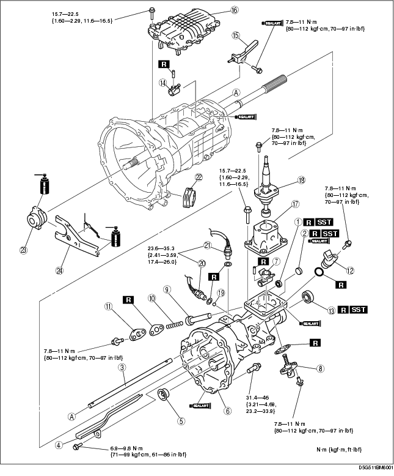
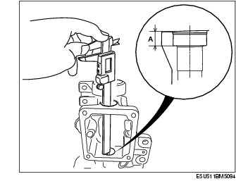
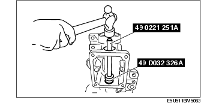
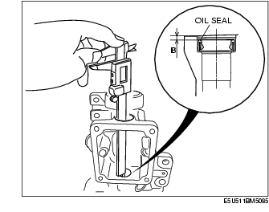
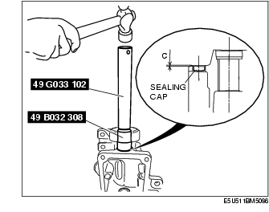
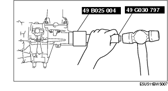
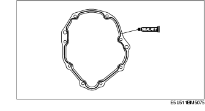
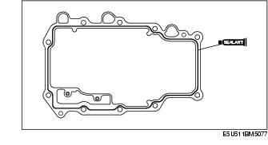
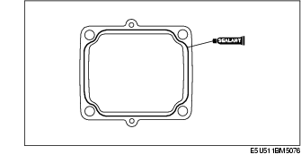
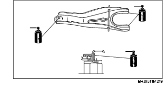

P66M-D [MT WM] ➭ TRANSMISSION/TRANSAXLE ➭ MANUAL TRANSMISSION ➭ TOP COVER COMPONENT AND EXTENSION HOUSING ASSEMBLY
TOP COVER COMPONENT AND EXTENSION HOUSING ASSEMBLY
D5E051117011M02
{: #wp1058560}
- Assemble in the order indicated in the table.

|
Oil seal (control rod) {: #wp1058601} (See Oil Seal (control rod) Assembly Note.) {: #wp1058651} |
|
|---|---|
|
2 {: #wp1058625} |
Sealing cap {: #wp1058628} (See Sealing Cap Assembly Note.) {: #wp1058675} |
|
3 {: #wp1058632} |
Control rod {: #wp1058635} |
|
4 {: #wp1058697} |
Oil passage {: #wp1058700} |
|
5 {: #wp1058718} |
Funnel {: #wp1058721} |
|
6 {: #wp1058739} |
Extension housing {: #wp1058742} (See Extension Housing Assembly Note.) {: #wp1058762} |
|
7 {: #wp1058774} |
Control rod end {: #wp1058777} |
|
8 {: #wp1058797} |
Select spindle component {: #wp1058800} |
|
9 {: #wp1058820} |
Select lock spindle {: #wp1058823} |
|
10 {: #wp1058843} |
Select lock spindle spring {: #wp1058846} |
|
11 {: #wp1058866} |
Spring cap {: #wp1058869} |
|
12 {: #wp1058889} |
Vehicle speed sensor, hole cover {: #wp1058892} |
|
13 {: #wp1058912} |
Oil seal (extension housing) {: #wp1058915} (See Oil Seal (Extension Housing) Assembly Note.) {: #wp1058937} |
|
14 {: #wp1058949} |
Control lever {: #wp1058952} |
|
15 {: #wp1058974} |
Oil passage {: #wp1058977} |
|
16 {: #wp1058999} |
Top cover, shift component {: #wp1059002} (See Top Cover Assembly Note.) {: #wp1059026} |
|
17 {: #wp1059038} |
Control case {: #wp1059041} (See Control Case Assembly Note.) {: #wp1059067} |
|
18 {: #wp1059079} |
Change lever component {: #wp1059082} |
|
19 {: #wp1059108} |
Steel ball {: #wp1059111} |
|
20 {: #wp1059137} |
Neutral switch {: #wp1059140} |
|
21 {: #wp1059166} |
Back-up light switch {: #wp1059169} |
|
22 {: #wp1059196} |
Dust boot {: #wp1059199} |
|
23 {: #wp1059225} |
Release collar {: #wp1059228} (See Release Collar, Release Fork Assembly Note.) {: #wp1059256} |
|
24 {: #wp1059268} |
Release fork {: #wp1059271} (See Release Collar, Release Fork Assembly Note.) {: #wp1059301} |
Oil Seal (control rod) Assembly Note
- Measure the depth A of the oil seal installation hole as shown in the figure.{: #wp1059357}

- Calculate the oil seal installation depth B.
Formula: B = A - (6.5-7.5 mm {0.158-0.295 in}) {: #wp1059406}B: Depth of the oil seal installation position {: #wp1059435}A: Depth of the oil seal installation hole
- Install the oil seal using the SST through the sealing cap hole as shown in the figure.{: #wp1059463}

• Verify that the depth B is within the calculated value in step 2.

Sealing Cap Assembly Note
- Install the sealing cap using the SST.
Caution
• Apply silicone sealant to the sealing cap.

Installation depth C: {: #wp1059604}2.0-4.0 mm {0.079-0.157 in}
Oil Seal (Extension Housing) Assembly Note
-
Apply specified oil to the lip of a new oil seal.
-
Install the oil seal evenly and gradually using the SST and a hammer.{: #wp1059655}

Extension Housing Assembly Note
- Apply sealant to the contact surfaces of the extension housing and transmission case as shown in the figure.{: #wp1059711}

- Install the extension housing to the transmission case.
Tightening torque:
31.4-46 N·m {3.21-4.69 kgf·m, 23.2-33.9 ft·lbf}
Top Cover Assembly Note
- Apply sealant to the contact surfaces of the transmission case and top cover as shown in the figure.{: #wp1059791}

- Install the top cover component to the transmission case.
Tightening torque:
15.7-22.5 N·m {1.60-2.29 kgf·m, 11.6-16.5 ft·lbf}
Control Case Assembly Note
- Apply sealant to the contact surfaces of the control case and extension housing as shown in the figure.{: #wp1059871}

- Install the control case to the extension housing.
Tightening torque:
15.7-22.5 N·m {1.60-2.29 kgf·m, 11.6-16.5 ft·lbf}
Release Collar, Release Fork Assembly Note
- Apply specified grease to the areas shown in the figure.{: #wp1059961}

- Install the release collar and release fork.